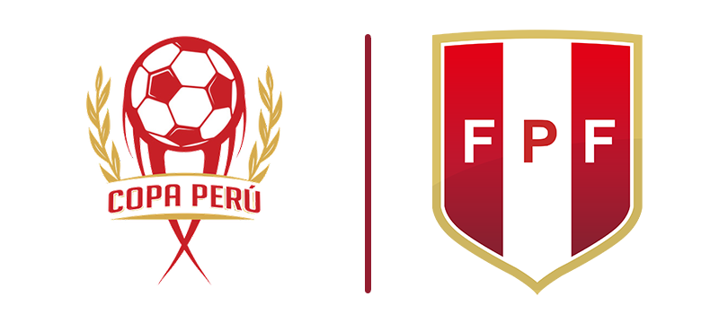
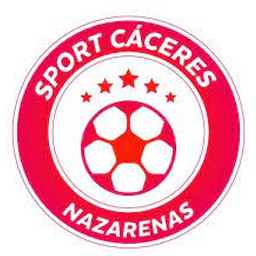
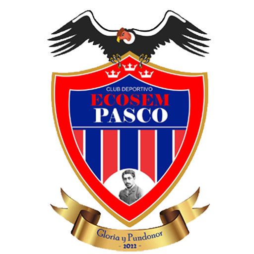

Clubes
Clubes
Descripción
Equipos clasificados a la etapa nacional.
Temporada
2022
Equipos
50
Categoría
3ra División

Temporada
2022
Equipos
50
Categoría
3ra División
| Departamento | Club | Provincia |
|---|---|---|
 Amazonas Amazonas |
 Unión Santo Domingo Unión Santo Domingo |
Chachapoyas |
 Bagua Grande FC Bagua Grande FC |
Utcubamba | |
 Áncash Áncash |
 San Andrés de Runtu San Andrés de Runtu |
Huari |
 Atlético Bruces FC Atlético Bruces FC |
Santa | |
 Apurimac Apurimac |
 Deportivo La Victoria Deportivo La Victoria |
Abancay |
 Social El Olivo Social El Olivo |
Abancay | |
 Arequipa Arequipa |
 Nacional FBC Nacional FBC |
Islay |
 Tigres de Cayma Tigres de Cayma |
Arequipa | |
 Ayacucho Ayacucho |
 Cultural Huracán Cultural Huracán |
Huanta |
|  Sport Cáceres | Huamanga | |
 Cajamarca Cajamarca |
Por Definir | Por Definir |
| Por Definir | Por Definir | |
 Callao Callao |
 Estrella Azul Estrella Azul |
Callao |
 Luis Escobar Luis Escobar |
Callao | |
 Cusco Cusco |
 Defensor Cubillas Defensor Cubillas |
Espinar |
 Deportivo Garcilazo Deportivo Garcilazo |
Cusco | |
 Huancavelica Huancavelica |
 UNH UNH |
Huancavelica |
 Deportivo Vianney Deportivo Vianney |
Huancavelica | |
 Huánuco Huánuco |
 Deportivo Verdecocha Deportivo Verdecocha |
Dos de Mayo |
 Señor de Mayo Señor de Mayo |
Ambo | |
 Ica Ica |
 Los Libertadores Los Libertadores |
Pisco |
 Unión San Martín Unión San Martín |
Pisco | |
 Junín Junín |
 CESA CESA |
Huancayo |
 Defensor Concepción Defensor Concepción |
Concepción | |
 La Libertad La Libertad |
 Real Sociedad Real Sociedad |
Sánchez Carrión |
 Atlético Verdún Atlético Verdún |
Pacasmayo | |
 Lambayeque Lambayeque |
 Deportivo la Balsa Deportivo la Balsa |
Ferreñafe |
 Nueva Esperanza Nueva Esperanza |
Chiclayo | |
 Lima Lima |
 Independiente San Felipe Independiente San Felipe |
Lima |
 Paz Soldán FBC Paz Soldán FBC |
Huaral | |
 Loreto Loreto |
 Estudiantil CNI Estudiantil CNI |
Maynas |
 AD Comerciantes FC AD Comerciantes FC |
Maynas | |
 Madre de Dios Madre de Dios |
 Deportivo Maldonado Deportivo Maldonado |
Tambopata |
 Atlético Deportivo Iñapari Atlético Deportivo Iñapari |
Tahuamanu | |
 Moquegua Moquegua |
 Credicoop Sán Cristóbal Credicoop Sán Cristóbal |
Mariscal Nieto |
 Mariscal Nieto Mariscal Nieto |
Ilo | |
 Pasco Pasco |
 Once Caldas Once Caldas |
Pasco |
|  Ecosem Pasco | Pasco | |
 Piura Piura |
 Defensor La Bocana Defensor La Bocana |
Sechura |
 Atlético Torino Atlético Torino |
Talara | |
 Puno Puno |
 Deportivo Universitario Deportivo Universitario |
Puno |
 FC Cahusiños FC Cahusiños |
Por Definir | |
 San Martín San Martín |
 Academia CIMAC Academia CIMAC |
Bellavista |
 Agua San Martín Agua San Martín |
Huallaga | |
 Tacna Tacna |
 Virgen de la Natividad Virgen de la Natividad |
Tacna |
| Por Definir | Por Definir | |
 Tumbes Tumbes |
 Deportivo Ferrocarril Deportivo Ferrocarril |
Zarumilla |
 Leoncio Prado Leoncio Prado |
Tumbes | |
 Ucayali Ucayali |
 Colegio Comercio Colegio Comercio |
Coronel Portillo |
 La Paz La Paz |
Puerto Inca |